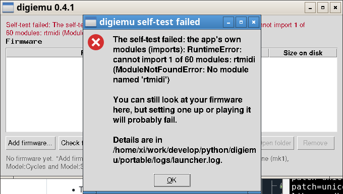
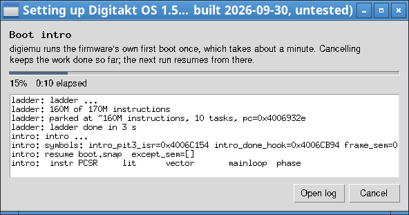
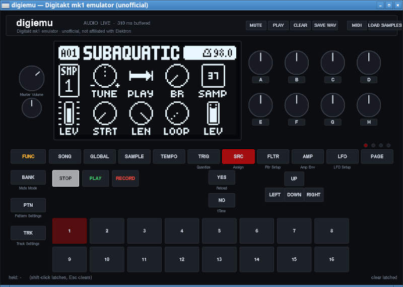

Эмулятор Digiemu разрабатывается как ПО с открытым исходным кодом. Но по какой-то причине готовые сборки есть только для Windows и MacOs. На Linux надо, видимо, собирать ручками.
Страница эмулятора:
https://github.com/elekloader/digiemu
Для начала надо проверить версию Python в системе. Она должны быть не меньше 3.12.
> python3 --version
Так же нужно будет компилировать из C-исходниковБ поэтому в системе должен быть установлен пакет build-essential.
> sudo apt install build-essential
Затем нужно поставить менеджер Python-пакетов uv. Это новый пакетный менеджер, написанный на Rust, который по заявлениям разработчиков заменяет утилиты pip, pip-tools, pipx, poetry, pyenv, twine, virtualenv. Для его установки надо от обычного пользователя дать команду:
> curl -LsSf https://astral.sh/uv/install.sh | sh
В результате утилиты uv и uvx будут установлены в каталог ~/.local/bin. Чтобы они вызывались, надо прописать каталог ~/.local/bin в переменную PATH и проверить в консоли, что эти две программы запускаются на исполнение.
Затем надо в свободный каталог склонировать исходники из GitHub:
> git clone git@github.com:elekloader/digiemu.git
Находясь в этом каталоге, от обычного пользователя надо выполнить команду:
> uv sync
В результате будет установлено 3 пакета:
Using CPython 3.12.16
Creating virtual environment at: .venv
Resolved 5 packages in 5ms
Prepared 3 packages in 5.31s
Installed 3 packages in 14ms
+ capstone==5.0.7
+ pypcode==4.0.0
+ unicorn==2.1.4
Эти новые пакеты разместятся в подкаталоге проекта: .venv/lib/python3.12/site-packages. Пакет unicorn - это в данном случае Python-обертка над C-библиотекой libunicorn.
Для того, чтобы правильно эмулировался процессор Digitakt, библиотеку libunicorn надо собрать с применением "патча". Для этого, всё в том же каталоге с проектом необходимо выполнить команду:
> tools/install-patched-unicorn.sh
Данный скрипт создат в каталоге /tmp временный подкаталог, скачает туда из GitHub проект:
https://github.com/unicorn-engine/unicorn.git
Далее скрипт переключит этот проект на коммит 8028ec436f2d9376525352dd38ed9ed6b9f6be10, применит к нему файлы патчей *.patch, расположенные в каталоге проекта /patches, запустит компиляцию, и готовые библиотеки уложит в каталог /.venv/lib/python3.12/site-packages/unicorn/lib.
Если все прошло успешно, в каталоге проекта надо дать команду, которая запустит сам эмулятор:
> uv run python -m emu.portable
В результате первого запуска появится интерфейс с ошибкой и офигительными шрифтами:

Но не надо отчаиваться, эта ошибка всего лишь говорит о том, что эмулятор не смог найти ни одной прошивки и поэтому не может загрузить модули. Поэтому нужно нажать ОК, и окно с ошибкой исчезнет. Потом надо нажать кнопку "Add firmware...", и указать местоположение файла с прошивкой.
Для первых экспериментов можно взять прошивку с официального сайта Electron, например по этой ссылке:
https://www.elektron.se/media/2026/10/Digitakt_OS1.54_dist.zip
Из данного архива надо извлечь файл Digitakt_OS1.54.syx и указать его в интерфейсе выбора файла. Появится окно с процессом загрузки прошивки:

И когда прошивка полностью загрузится, появится окно с интерфейсом Digitakt 1:

Следует учитывать, что прошивка содержит только код, и не содержит семплов, которые находятся на Drive+. Поэтому, по-началу эмулятор будет молчать.
...Дописать...